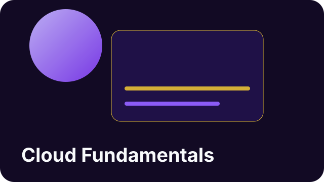

What you will build
A beginner cloud vocabulary, a map of how apps store data online, and confidence talking about modern tech systems.
This PG Parks mission is built for beginners who want a clear, fun entry point into cloud computing. You will learn what cloud services are, why companies use them, and how your own tech journey can start with one strong foundation.

A beginner cloud vocabulary, a map of how apps store data online, and confidence talking about modern tech systems.
Cloud basics, digital storage, service models, security awareness, and career-friendly problem solving.
Finish your first cloud lesson, take notes in plain language, and explain one concept back to a friend or family member.